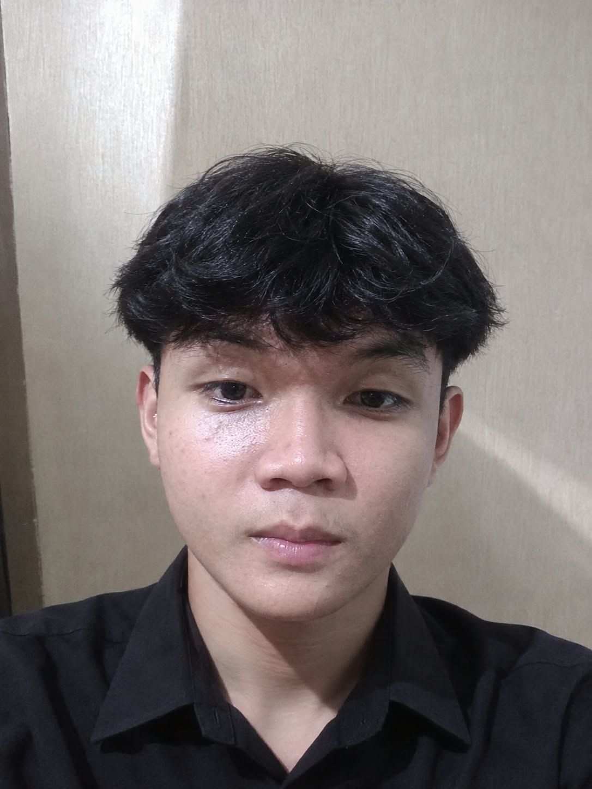

INSTALASI & CEK REDAMAN ODP
Instalasi Fiber Optik & Cek Redaman ODP
Melakukan instalasi Fiber Optik dan mengukur redaman pada ODP. Hasil pengukuran dicatat sebagai bagian dari pemeriksaan koneksi.
Lulusan SMK Plus Pelita Nusantara jurusan Teknik Komputer dan Jaringan. saya individu yang memiliki motivasi tinggi untuk terus berkembang dengan kemampuan komunikasi yang baik serta sikap disiplin dan bertanggung jawab.

dibawah ini adalah dokumentasi dan hasil praktik saya .
Sertifikat pelatihan, webinar, dan pencapaian yang bisa dibuka langsung.
Saya terbuka untuk kesempatan kerja, magang, dan kolaborasi di bidang IT.